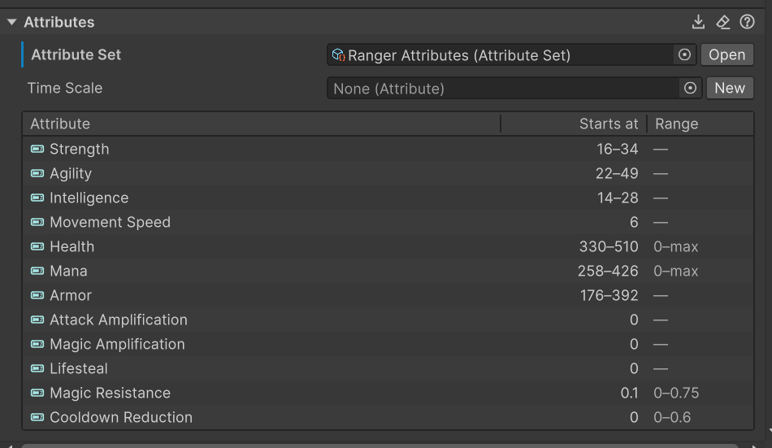

Attributes
The Attributes section names the entity's attribute set and the attribute its time runs at.

The Ranger's Attributes section.
| Property | Description |
|---|---|
| Attribute Set | The set the entity's attributes come from. Attribute Sets describes the set itself. |
| Time Scale | The attribute the entity's time runs at, 1 as the game's. |
Under the Attribute Set field, a table lists each attribute the set gives, its sub-sets' included, with the value it starts at and its range.
When the GAS initializes, it:
- creates every attribute in the set and its sub-sets, each at its starting Current and Base values;
- applies the set's asset tags to the entity;
- subscribes the set's workers.
Gameplay effects then change the values. An entity with no Attribute Set has no attributes. An effect that targets an attribute the entity lacks leaves it unchanged.
Time Scale
Time Scale names the attribute the entity's time runs at, 1 as the game's. The entity's effects, cooldowns, sequences and waits run by that time.
- An effect that lowers the attribute slows the entity.
- One that raises it hastes the entity.
- As each comes off, the entity's time is the game's again.
Give the attribute a Current of 1 in the set.
Code sets a scale of its own with GetClock().TimeScale, such as a hit-stop's 0. The clock reads the two multiplied,
so a hit-stop holds under a slow. OwnScale is code's part, and AttributeScale the attribute's.